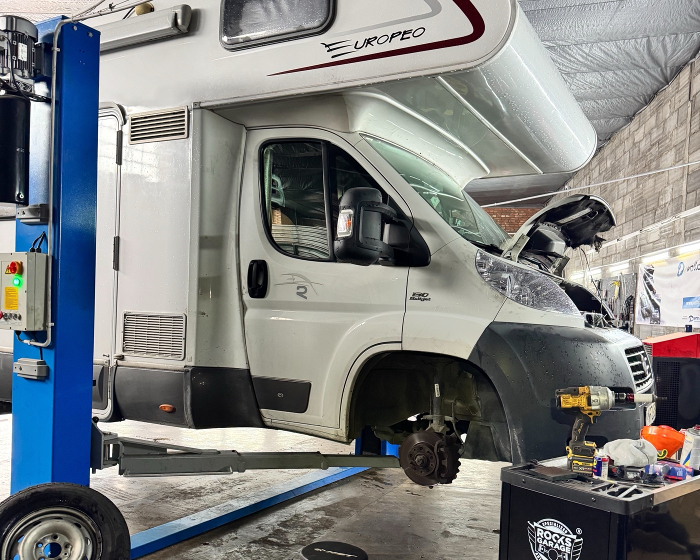
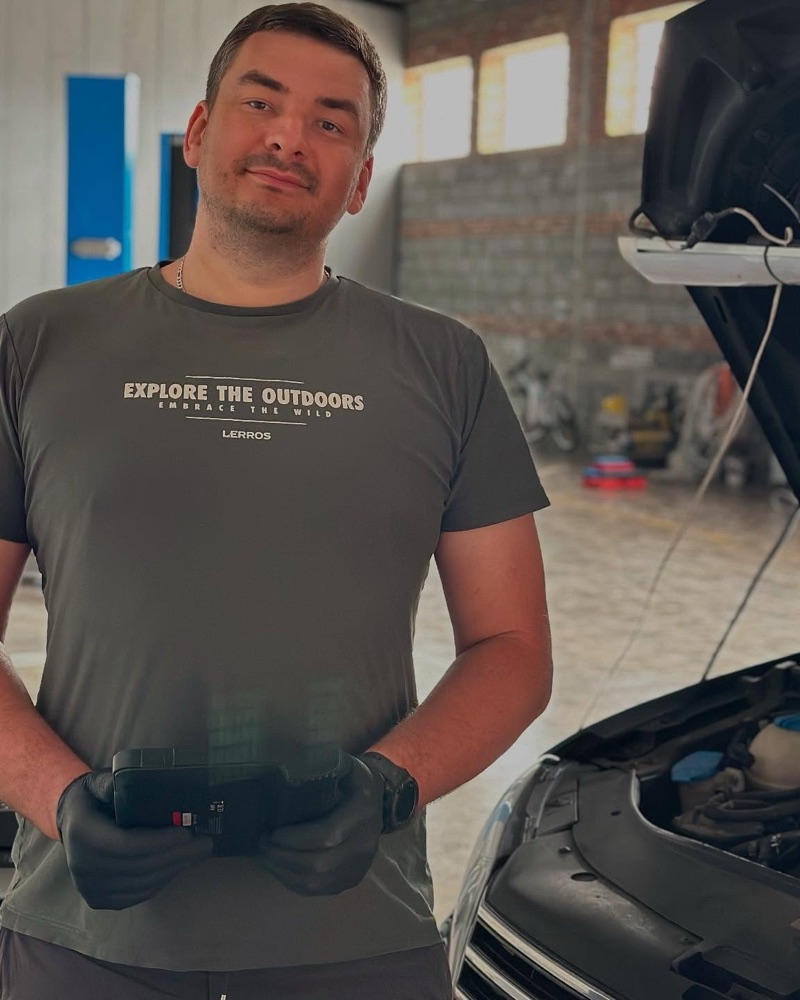

Механика
Подвеска, тормоза, ГРМ, сцепление, выхлоп и система охлаждения.
Подробнее →Механика, кузовной ремонт и покраска в одном месте — для легковых авто и больших бусов. Сначала диагностика и понятная цена, ремонт только после вашего согласия. Говорим по-русски.
От замены масла до ремонта после ДТП. Один сервис, один контакт, одна фактура.
Подвеска, тормоза, ГРМ, сцепление, выхлоп и система охлаждения.
Подробнее →Чтение и сброс ошибок, Check Engine, диагностика электрики и электроники.
Подробнее →Обслуживание и ремонт коммерческих бусов и автопарков. Быстрая запись для компаний.
Подробнее →Заправка (R134a / R1234yf), дезинфекция, поиск утечек, ремонт.
Подробнее →Ремонт после ДТП, вмятины и коррозия, покраска элементов.
Подробнее →Замена масла в АКПП, адаптации, ремонт DSG.
Записаться →Замена масла и фильтров, плановое ТО, подготовка к техосмотру.
Записаться →Сезонная замена шин, балансировка, развал-схождение.
Записаться →
Сначала диагностика и стоимость. Без вашего согласия не меняем ни одной детали.
Механика, электрика, кондиционер, кузов и покраска — не нужно ездить по разным сервисам.
Фото и старые детали — вы видите, за что платите.
Обслуживание на русском и польском. Звонок или WhatsApp.
Позвоните или напишите в WhatsApp. Подберём удобное время.
Проверяем машину и находим причину неисправности.
Называем стоимость и сроки. Решение за вами.
Забираете исправную машину, фактуру и гарантию на работы.
У каждого своя специализация — поэтому ремонт быстрый и точный.

Более 15 лет в автомобильной сфере. Диагностика, коробки передач, трансмиссия.
Ремонт после ДТП, покраска, коррозия.
Ремонт бусов, кондиционеры, подвеска.
Przyjemne miejsce z dużym i przestronnym warsztatem samochodowym. Mechanicy są mili i komunikatywni. Rozsądne ceny za robociznę i części. Gorąco polecam!
Polecam S L Autoserwis. Wymieniłem tutaj olej oraz usunąłem błędy komputera. Usługa została wykonana sprawnie i profesjonalnie, a obsługa była miła i pomocna. Wszystko działa bez zarzutu. Na pewno wrócę i mogę polecić ten warsztat innym kierowcom.
Bardzo polecam! Trafiłam z polecenia i od tej pory tylko tam jeżdżę! Panowie robią wszystko bardzo dokładnie, wyjaśnią i mam do nich pełne zaufanie.
Отзывы из Google.
Простые работы (масло, колодки, кондиционер) обычно делаем в день визита. Срок крупного ремонта называем вместе с ценой.
Да, но на запчасти клиента гарантии нет — только на работу. Можем заказать проверенные запчасти сами.
На работы даём гарантию до 1 года, на запчасти — по гарантии производителя.
Да, для частных лиц и компаний.
Да, обслуживаем на русском и польском языках.
Да, в субботу с 10:00 до 14:00.